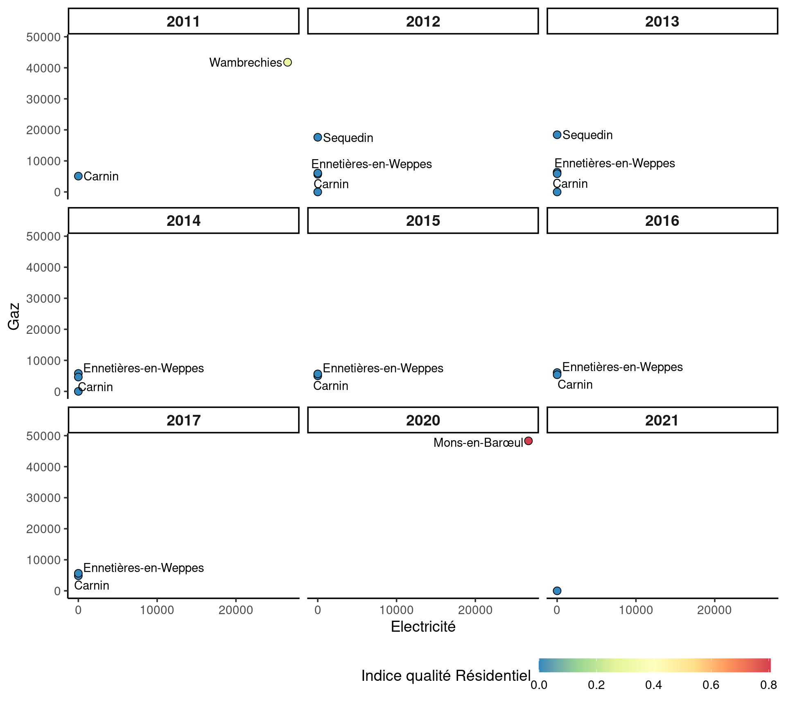

North of France
Leidi Prado e Henrique Laureano
Last modification on 2022-11-13 11:54:37
# A tibble: 100 × 4
Année `Libellé Commune` Filière n
<int> <chr> <chr> <int>
1 2011 Bousbecque Gaz 2
2 2011 Haubourdin Gaz 2
3 2011 Lille Gaz 2
4 2011 Wattrelos Gaz 2
5 2012 Bousbecque Gaz 2
6 2012 Ennetières-en-Weppes Electricité 2
7 2012 Haubourdin Electricité 2
8 2012 Haubourdin Gaz 2
9 2012 Lille Gaz 2
10 2012 Marcq-en-Barœul Electricité 2
11 2012 Marquette-lez-Lille Electricité 2
12 2012 Sequedin Electricité 2
13 2012 Wattrelos Gaz 2
14 2013 Bousbecque Gaz 2
15 2013 Carnin Electricité 2
16 2013 Ennetières-en-Weppes Electricité 2
17 2013 Haubourdin Electricité 2
18 2013 Haubourdin Gaz 2
19 2013 Lille Gaz 2
20 2013 Marcq-en-Barœul Electricité 2
21 2013 Marquette-lez-Lille Electricité 2
22 2013 Sequedin Electricité 2
23 2013 Wattrelos Gaz 2
24 2014 Bousbecque Gaz 2
25 2014 Carnin Electricité 2
26 2014 Ennetières-en-Weppes Electricité 2
27 2014 Haubourdin Electricité 2
28 2014 Haubourdin Gaz 2
29 2014 Lille Gaz 2
30 2014 Marcq-en-Barœul Electricité 2
31 2014 Marquette-lez-Lille Electricité 2
32 2014 Sequedin Electricité 2
33 2014 Wattrelos Gaz 2
34 2015 Bousbecque Gaz 2
35 2015 Carnin Electricité 2
36 2015 Ennetières-en-Weppes Electricité 2
37 2015 Haubourdin Gaz 2
38 2015 Lille Gaz 2
39 2015 Marcq-en-Barœul Electricité 2
40 2015 Marquette-lez-Lille Electricité 2
41 2015 Sequedin Electricité 2
42 2015 Wattrelos Gaz 2
43 2016 Bousbecque Gaz 2
44 2016 Carnin Electricité 2
45 2016 Ennetières-en-Weppes Electricité 2
46 2016 Haubourdin Gaz 2
47 2016 Lille Gaz 2
48 2016 Marcq-en-Barœul Electricité 2
49 2016 Marquette-lez-Lille Electricité 2
50 2016 Sequedin Electricité 2
51 2016 Wattrelos Gaz 2
52 2017 Bousbecque Gaz 2
53 2017 Carnin Electricité 2
54 2017 Ennetières-en-Weppes Electricité 2
55 2017 Haubourdin Gaz 2
56 2017 Lille Gaz 2
57 2017 Marcq-en-Barœul Electricité 2
58 2017 Marquette-lez-Lille Electricité 2
59 2017 Sequedin Electricité 2
60 2017 Wattrelos Gaz 2
61 2018 Bousbecque Gaz 2
62 2018 Carnin Electricité 2
63 2018 Ennetières-en-Weppes Electricité 2
64 2018 Haubourdin Gaz 2
65 2018 Lille Gaz 2
66 2018 Marcq-en-Barœul Electricité 2
67 2018 Marquette-lez-Lille Electricité 2
68 2018 Sequedin Electricité 2
69 2018 Wattrelos Gaz 2
70 2019 Bousbecque Gaz 2
71 2019 Carnin Electricité 2
72 2019 Ennetières-en-Weppes Electricité 2
73 2019 Haubourdin Gaz 2
74 2019 Lille Gaz 2
75 2019 Loos Electricité 2
76 2019 Marcq-en-Barœul Electricité 2
77 2019 Marquette-lez-Lille Electricité 2
78 2019 Sequedin Electricité 2
79 2019 Wattrelos Gaz 2
80 2020 Bousbecque Gaz 2
81 2020 Carnin Electricité 2
82 2020 Ennetières-en-Weppes Electricité 2
83 2020 Haubourdin Gaz 2
84 2020 Lille Gaz 2
85 2020 Loos Electricité 2
86 2020 Marcq-en-Barœul Electricité 2
87 2020 Sequedin Electricité 2
88 2020 Wattrelos Gaz 2
89 2021 Bousbecque Gaz 2
90 2021 Carnin Electricité 2
91 2021 Ennetières-en-Weppes Electricité 2
92 2021 Haubourdin Gaz 2
93 2021 Lille Gaz 2
94 2021 Loos Electricité 2
95 2021 Marcq-en-Barœul Electricité 2
96 2021 Marquette-lez-Lille Electricité 2
97 2021 Sequedin Electricité 2
98 2021 Wattrelos Gaz 2
99 2021 Wavrin Electricité 2
100 2021 Wavrin Gaz 2Warning: Removed 5 rows containing non-finite values (stat_smooth).Warning: Removed 5 rows containing missing values (geom_point).Warning: Removed 5 rows containing non-finite values (stat_smooth).
Removed 5 rows containing missing values (geom_point).Agriculture
[1] 1608[1] 504Industrie
[1] 1884[1] 264Warning: ggrepel: 7 unlabeled data points (too many overlaps). Consider increasing max.overlaps
ggrepel: 7 unlabeled data points (too many overlaps). Consider increasing max.overlapsTertiaire
[1] 2138[1] 40Résidentiel
[1] 2157[1] 21
Secteur Inconnu
[1] 1486[1] 643Tabela
Année Libellé Commune Electricité value Année Libellé Commune Gaz
1 2011 Carnin 116.500 min 2011 Escobecques 607.0000
2 2011 Lille 1334366.530 max 2011 Lille 2050733.5000
3 2012 Carnin 155.120 min 2012 Escobecques 736.0000
4 2012 Lille 1390015.660 max 2012 Lille 2200088.7000
5 2013 Escobecques 1505.090 min 2013 Escobecques 853.0000
6 2013 Lille 1416690.390 max 2013 Lille 2124848.8000
7 2014 Escobecques 1231.600 min 2014 Escobecques 638.0000
8 2014 Lille 1299455.690 max 2014 Lille 1629907.4000
9 2015 Escobecques 1330.810 min 2015 Escobecques 698.0000
10 2015 Lille 1329572.470 max 2015 Lille 1781106.9100
11 2016 Escobecques 1415.640 min 2016 Escobecques 780.0000
12 2016 Lille 1341908.790 max 2016 Lille 2005011.2700
13 2017 Escobecques 1308.410 min 2017 Escobecques 777.0000
14 2017 Lille 1321460.160 max 2017 Lille 2047221.5600
15 2018 Escobecques 1255.279 min 2018 Escobecques 789.4641
16 2018 Lille 1310724.349 max 2018 Lille 1947146.5709
17 2019 Escobecques 1126.917 min 2019 Escobecques 775.4800
18 2019 Lille 1287249.422 max 2019 Lille 1806953.4138
19 2020 Escobecques 1124.630 min 2020 Escobecques 754.5748
20 2020 Lille 1212374.628 max 2020 Lille 1679215.3188
21 2021 Escobecques 1274.534 min 2021 Escobecques 852.5779
22 2021 Lille 1271029.503 max 2021 Lille 1730425.4200
value
1 min
2 max
3 min
4 max
5 min
6 max
7 min
8 max
9 min
10 max
11 min
12 max
13 min
14 max
15 min
16 max
17 min
18 max
19 min
20 max
21 min
22 max